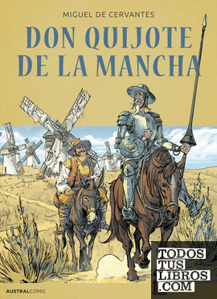
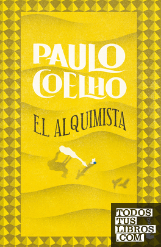

TITULO
El Gran GatsbyEDITORIAL
Editorial AAUTOR
IDIOMA
EspañolPAGINAS
300SINOPSIS
La historia sigue al millonario Jay Gatsby y su obsesión por recuperar a Daisy Buchanan, su antigua amante.AÑO DE PUBLICACIÓN
1925TITULO
1984EDITORIAL
Editorial BAUTOR
IDIOMA
EspañolPAGINAS
400SINOPSIS
La novela presenta una sociedad distópica en la que el Estado vigilante controla todos los aspectos de la vida de sus ciudadanos.AÑO DE PUBLICACIÓN
1949
TITULO
Harry Potter y la Piedra FilosofalEDITORIAL
Editorial CAUTOR
IDIOMA
EspañolPAGINAS
350SINOPSIS
El primer libro de la serie Harry Potter, en el que el joven mago descubre el mundo de la magia y se enfrenta a su mayor enemigo.AÑO DE PUBLICACIÓN
1997TITULO
El señor de los anillos: La comunidad del anilloEDITORIAL
Editorial DAUTOR
IDIOMA
EspañolPAGINAS
500SINOPSIS
Un grupo de seres se embarcan en una peligrosa misión para destruir un anillo poderoso y evitar que caiga en manos del mal.AÑO DE PUBLICACIÓN
1954TITULO
Cien años de soledadEDITORIAL
Editorial EAUTOR
IDIOMA
EspañolPAGINAS
400SINOPSIS
La saga de la familia Buendía a lo largo de varias generaciones, llena de realismo mágico y sucesos extraordinarios.AÑO DE PUBLICACIÓN
1967

TITULO
Don Quijote de la ManchaEDITORIAL
Editorial FAUTOR
IDIOMA
EspañolPAGINAS
900SINOPSIS
Las aventuras del ingenioso hidalgo don Quijote y su fiel escudero Sancho Panza, en una obra considerada como una de las más importantes de la literatura española.AÑO DE PUBLICACIÓN
1605
TITULO
Orgullo y prejuicioEDITORIAL
Editorial GAUTOR
IDIOMA
EspañolPAGINAS
300SINOPSIS
Una historia de amor y desencuentros en la Inglaterra del siglo XIX, que explora las convenciones sociales y los prejuicios de la época.AÑO DE PUBLICACIÓN
1813
TITULO
Matar a un ruiseñorEDITORIAL
Editorial HAUTOR
IDIOMA
EspañolPAGINAS
320SINOPSIS
La historia de Scout Finch y su hermano Jem, quienes presencian los conflictos raciales en una pequeña ciudad del sur de Estados Unidos durante la década de 1930.AÑO DE PUBLICACIÓN
1960TITULO
La sombra del vientoEDITORIAL
Editorial IAUTOR
IDIOMA
EspañolPAGINAS
500SINOPSIS
El joven Daniel Sempere descubre un libro que lo llevará a desentrañar secretos del pasado y a enfrentarse a un peligroso enemigo.AÑO DE PUBLICACIÓN
2001

TITULO
El alquimistaEDITORIAL
Editorial JAUTOR
IDIOMA
EspañolPAGINAS
200SINOPSIS
La historia de Santiago, un joven pastor que emprende un viaje en busca de su tesoro personal y descubre el significado de la vida.AÑO DE PUBLICACIÓN
1988